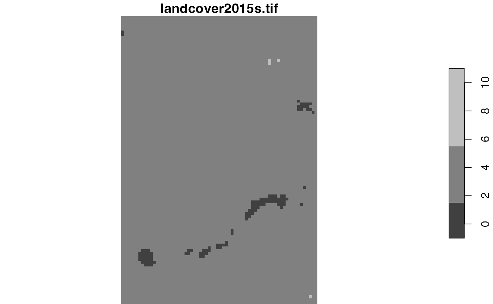
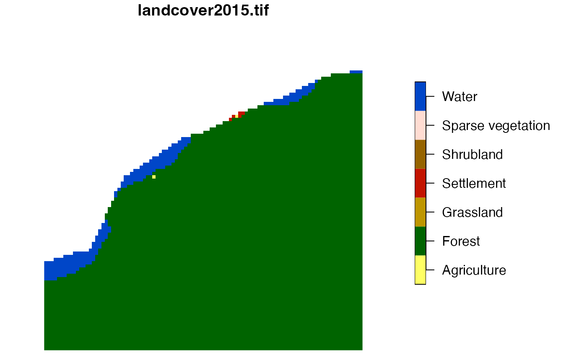
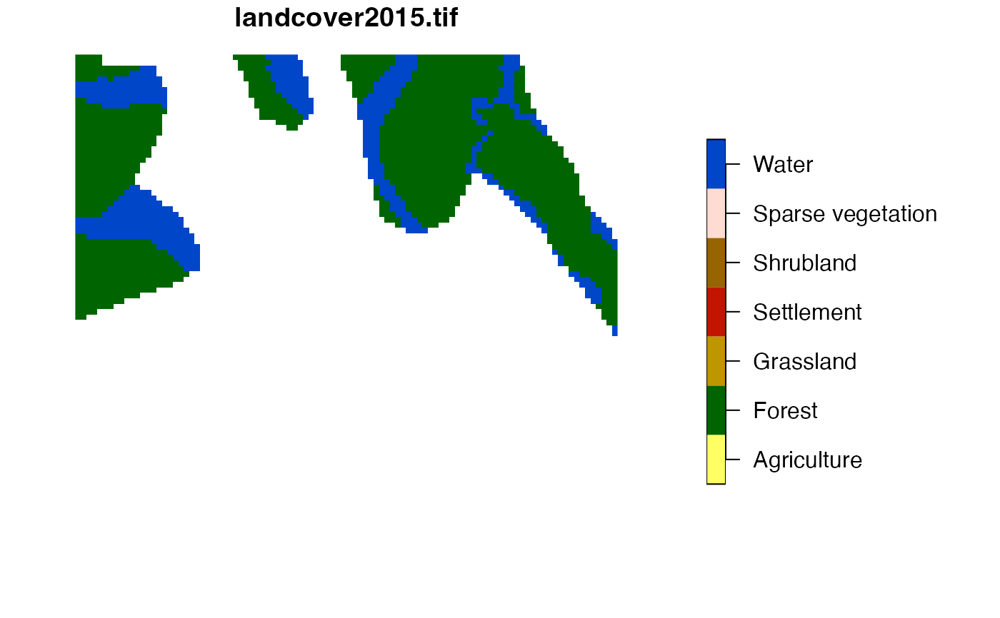

R/lsp_add_examples.R
lsp_add_examples.RdAdds spatial data of each region in an lsp or sf object.
The output is an lsp or sf object with an additional column "region".
See examples.
lsp_add_examples(x, y, window = NULL)
# S3 method for lsp
lsp_add_examples(x, y, window = NULL)
# S3 method for sf
lsp_add_examples(x, y, window = NULL)Object of class lsp - usually a subset of the output of lsp_signature()
or an object of class sf - usually a subset of the output of lsp_search()
Object of class stars, stars_proxy, or terra's SpatRaster.
Specifies areas for analysis. It can be either: NULL or an sf object.
The sf object is only needed for adding examples of irregular regions.
The input object with a new column "region".
The "region" column is a list with a raster extracted for each row.
library(stars)
landcover = read_stars(system.file("raster/landcover2015s.tif", package = "motif"))
landcover_coma = lsp_signature(landcover, type = "coma", threshold = 0.9, window = 100)
selected_coma = subset(landcover_coma, id %in% c(5, 10, 15, 35))
selected_coma
#> # A tibble: 4 × 3
#> id na_prop signature
#> <int> <dbl> <list>
#> 1 5 0 <int [7 × 7]>
#> 2 10 0 <int [7 × 7]>
#> 3 15 0 <int [7 × 7]>
#> 4 35 0.32 <int [7 × 7]>
selected_coma = lsp_add_examples(x = selected_coma, y = landcover)
selected_coma
#> # A tibble: 4 × 4
#> id na_prop signature region
#> <int> <dbl> <list> <list>
#> 1 5 0 <int [7 × 7]> <stars[,100]>
#> 2 10 0 <int [7 × 7]> <stars[,100]>
#> 3 15 0 <int [7 × 7]> <stars[,100]>
#> 4 35 0.32 <int [7 × 7]> <stars[,100]>
plot(selected_coma$region[[1]])
plot(selected_coma$region[[4]])

# \donttest{
# larger data example
library(stars)
landcover = read_stars(system.file("raster/landcover2015.tif", package = "motif"))
landcover_coma = lsp_signature(landcover, type = "coma", threshold = 0.9, window = 100)
selected_coma = subset(landcover_coma, id %in% c(5, 80, 1971, 2048))
selected_coma
#> # A tibble: 4 × 3
#> id na_prop signature
#> <int> <dbl> <list>
#> 1 5 0.357 <int [7 × 7]>
#> 2 80 0 <int [7 × 7]>
#> 3 1971 0.0086 <int [7 × 7]>
#> 4 2048 0.790 <int [7 × 7]>
selected_coma = lsp_add_examples(x = selected_coma, y = landcover)
selected_coma
#> # A tibble: 4 × 4
#> id na_prop signature region
#> <int> <dbl> <list> <list>
#> 1 5 0.357 <int [7 × 7]> <stars[,100]>
#> 2 80 0 <int [7 × 7]> <stars[,100]>
#> 3 1971 0.0086 <int [7 × 7]> <stars[,100]>
#> 4 2048 0.790 <int [7 × 7]> <stars[,100]>
plot(selected_coma$region[[1]])
#> Error in image.stars(x, ..., axes = axes, breaks = breaks, col = col, key.pos = key.pos, key.width = key.width, key.length = key.length, main = NULL): rgb plotting not supported on this device
plot(selected_coma$region[[4]])

#> Error in image.stars(x, ..., axes = axes, breaks = breaks, col = col, key.pos = key.pos, key.width = key.width, key.length = key.length, main = NULL): rgb plotting not supported on this device
# }
